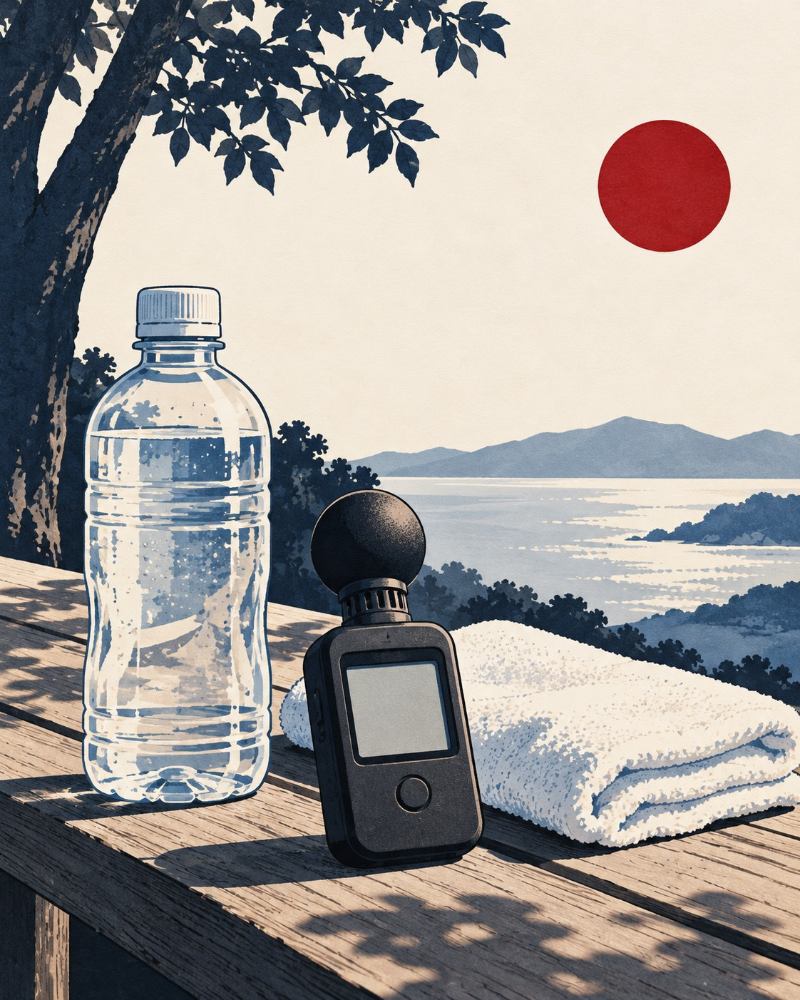

O Japão usa o WBGT, ou暑さ指数, como referência para risco de doenças relacionadas ao calor. A diferença é importante: ele considera não só temperatura, mas também umidade, radiação solar e vento.

A Agência Meteorológica do Japão explica que o risco aumenta em ambientes de alta temperatura, alta umidade e pouco vento, especialmente durante trabalho ou atividade física. Por isso, escola, obra, fábrica, festival, trilha e esporte ao ar livre precisam tratar calor como risco operacional.
O que muda na prática
Quando o índice sobe, a resposta deve vir antes do mal-estar: água, eletrólitos quando necessário, pausa, sombra, redução de intensidade e atenção a crianças, idosos e pessoas trabalhando em ambiente quente. Em trilha, calor também reduz julgamento, acelera fadiga e aumenta chance de erro.
A recomendação é acompanhar fontes oficiais e não decidir apenas pela sensação de “aguento mais um pouco”. No Japão, o verão é bonito, mas pode ser brutalmente úmido.